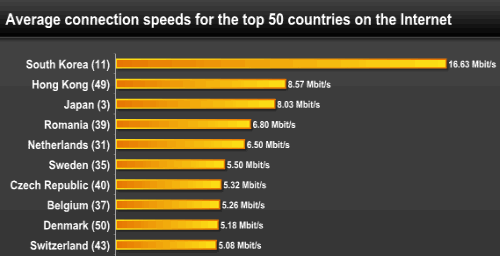

South Korea has the highest internet speed
Where should you travel if you want the best Internet connection in the world? A new report says you should book a ticket straight to South Korea. The East Asian nation topped a ranking of countries by their communications infrastructure released Monday The ranking, which comes by way of the International Telecommunication Union (ITU), tracks a variety of metrics to come up with a benchmark for measuring telecom developments across countries. South Korea, which also led the ITU’s list back in 2010, is considered by many to be home to the fastest Internet connections in the world.Coming in second and third place are Denmark and Iceland, respectively. The United States, meanwhile, is sitting in fifteenth place, a one-place improvement from five years ago.(Time,2015) But how does this Indiana-sized country between Japan and China, two modern tech giants, manage to sustain its undefeated speed record? And why doesn’t the rest of the world have anything like it? I went looking for answers, and came back with five:
- Government planning
- Healthy competition
- Urban population density
- Private-sector growth
- Korean culture These are less entertaining than my initial explanation, which was that the South Korean internet is actually magic. However, taken together they make a great deal of sense. None of them is individually responsible for the blazing-fast speed of Korean data, but combining them reveals a country in the right place, at the right time, with the right mindset. Perhaps the thing that sets Korea apart the most, though, is how hard and long they worked to build an excellent system—which may be why moving there is probably the only way you can hope to get Korean-level internet speeds in the near future(IDG Connect,2015).
Iranians Charged with hacking assaults on US
The U.S. Justice Department unsealed charges against seven alleged Iranian hackers Thursday, saying they attacked the U.S. financial system and servers for a dam in New York in the first public indictment against hackers tied to the Iranian government U.S. officials have long accused Iran of sponsoring hackers, but Thursday’s charges are the most explicit accusation to date. The indictment didn’t specifically allege the Iranian government directed the attacks, but said that one of the hackers received credit toward completion of his mandatory military service for the attacks and that another had trained Iranian intelligence officials, among other things.The unsealing of the charges comes after months of consultations among the Justice Department, the State Department and a handful of intelligence agencies, said a person familiar with the matter. Over the last two years U.S . officials say they have changed their approach and begun to treat nation-state affiliated hacking attacks like terrorism threats.“In unsealing this indictment, the Department of Justice is sending a powerful message: that we will not allow any individual, group, or nation to sabotage American financial institutions or undermine the integrity of fair competition in the operation of the free market,” Attorney General Loretta Lynch said at a news conference in Washington, D.C.Some officials privately expressed concerns that unsealing charges against individuals the U.S. has no hopes of arresting would only serve to agitate countries with which the U.S. has fraught relations, including China and Iran, the person familiar with the matter said. “The world is small and our memory is long,” Federal Bureau of Investigation Director James Comey said during the Thursday news conference. “We want them looking over their shoulders.(THE WALL STREET JOURNAL,2016)”